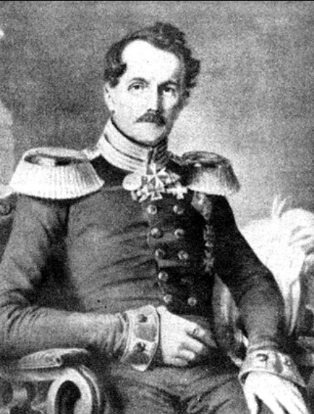
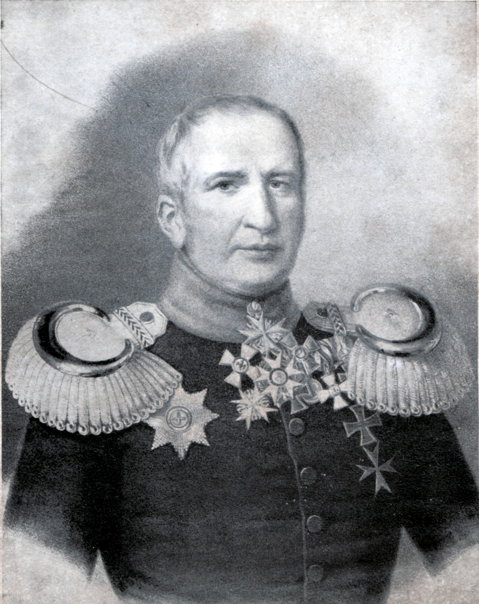

뤼첸 전투 (12) - 프로이센의 분노와 아쉬움
게시: 2022-11-21T06:30:25+09:00
양측이 도합 20만이 넘는 병력을 동원했던 뤼첸 전투는 당연히 양측 모두에게 큰 피해를 남겼습니다. 그러나 각자의 피해가 얼마나 되는지에 대해서는 정확한 기록이 없으며 후세의 역사가들이 나름대로 추측한 결과만 있을 뿐입니다. 심지어 프랑스군과 연합군이 각각 얼마씩의 병력을 동원했는지에 대해서도 정확하게 일치하는 기록은 없을 정도입니다. 프랑스측은 약 1만5천, 혹은 2만이 넘는 사상자를 냈다고 하고, 연합군측은 그보다는 적은 사상자를 냈다는 것이 일반적인 추론입니다만, 역사가에 따라 연합군의 피해가 더 컸다는 이야기도 있습니다. 참고로 비트겐슈타인은 공식 보고서에서 프랑스군의 피해는 1만5천, 연합군의 피해는 1만으로 언급했습니다. 하지만 당시 연합군 진영에 있던 영국군 장교 캠벨(Neil Campbell)은 연합군의 피해를 1만2천에서 1만5천, 그리고 프랑스군의 피해는 더 적은 것으로 기록했습니다.

(캠벨입니다. 당시 그는 37세의 한창 나이였습니다. 군인 집안에서 태어난 그는 21살 때 처음 (영국군의 관례에 따라) 돈을 주고 소위 계급을 사서 임관한 이후 지중해와 영국 국내, 그리고 자메이카 등지에서 군 생활을 했으며 실전 경험은 거의 없었습니다. 1813년 주러시아 대사관 무관 자격으로 러시아군을 따라 다니기 직전까지는 포르투갈군에서 파견 장교 생활을 했으니 전쟁 경험이 풍부한 사람이라고는 할 수 없었지요. 그런 그도 1814년 전투 중 큰 부상을 입기는 했는데, 프랑스군에게 당한 것이 아니라 그를 프랑스군으로 오인한 러시아군 소속 코삭 기병에게 당한 것이었습니다. 그는 나중에 엘바 섬으로 나폴레옹을 에스코트하는 역할을 맡았고 거기서 나폴레옹을 감시하는 임무도 맡았는데, 나중에 나폴레옹이 엘바 섬을 탈출하자 연합국들은 캠벨이 나폴레옹에게서 뇌물을 받고 눈 감아준 것이 아니냐고 의심하기도 했지만 영국 당국으로부터 기소를 당하지는 않았습니다.)
그러나 양측 모두 가장 큰 피해를 입은 부대는 확실히 존재했습니다. 먼저 프랑스측에서는 당연히 최초로 기습을 당한 뒤 4개 마을에서 연합군의 집중 공격을 끝까지 몸으로 다 받아낸 네의 제3 군단의 피해가 가장 컸습니다. 조미니(Antoine-Henri Jomini)는 뤼첸 전투에서 바로 네의 부관으로 참전했는데 그의 기록에 따르면 약 4만5천이었던 제3 군단은 이 전투에서 1만2천의 병력을 잃었습니다. 전체의 27%가 넘는 피해로서, 나폴레옹 전쟁 초반만 하더라도 이 정도는 패전측에서나 볼 수 있는 피해였습니다. 참고로 1806년 예나-아우어슈테트 전투에서 전례없는 완패를 당했던 프로이센군의 피해는 예나에서 14%, 아우어슈테트에서는 28%였습니다. 반면에 쾌승을 거둔 프랑스군의 피해는 예나에서는 4%에 불과했고, 거의 2배의 적군을 상대로 악전고투했던 아우어슈테트에서 다부의 군단이 입은 피해도 16%에 불과했습니다. 마찬가지로, 연합군 측에서는 4개 마을 전투에서 네의 군단과 멱살잡이를 했던 블뤼허와 요크의 프로이센 군단이 가장 큰 피해를 입었습니다. 이 둘이 지휘했던 프로이센군은 3만3천으로 5월 2일 아침을 시작했으나, 해가 저물고 난 뒤에는 2만5천도 남지 않았습니다. 즉 이들도 24%가 넘는 피해를 입었습니다. 특히 조국의 흥망이 이 전투에 달렸다고 믿었던 프로이센 장교들의 피해가 컸고, 비트겐슈타인이 5월 3일 제출한 전투 보고서에도 '많은 프로이센 장교들의 희생'을 언급할 정도였습니다. 가령 뢰더(Friedrich Erhard Leopold von Röder)의 여단에는 총 159명의 장교가 있었는데 이 날 하루에만 74명이 전사하거나 부상으로 쓰러졌습니다. 거의 47%에 달하는 피해였습니다.

(뢰더입니다. 나폴레옹보다 1살 연상인 그는 서류상으로는 13살 때부터 군 생활을 시작한 것으로 되어 있으나 그건 선대부터 프로이센 장군 집안이었던 가문의 빽을 이용한 스펙 쌓기에 불과했고, 제대로 실전에 참여한 것은 38세였던 예나-아우어슈테트 전투 때였고, 그나마 호헨로헤 장군의 부관 노릇이었습니다. 뤼첸 전투 등에서 비로소 실전 경험을 제대로 한 그는 나중에 워털루 전투에도 참전하는 영광을 누렸습니다. 이후 그는 브레슬라우, 포젠 등지에서 지휘관 생활을 이어가다 전역한 지 2년 만에 66세의 비교적 이른 나이에 사망했습니다.) 그에 비해 오후 늦게서야 전투에 투입되기 시작한 러시아군의 피해는 상대적으로 훨씬 적었습니다. 가령 연합군의 우측인 아이스도르프 마을에서 오후 늦게서야 막도날의 제11 군단과 싸움을 벌였던 뷔르템베르크의 오이겐 대공의 부대는 약 8700의 병력 중에서 약 1700을 상실했다고 보고했습니다. 20%가 채 안되는 피해였습니다만 이것이 아마도 러시아군 중에서는 가장 큰 피해를 입은 부대일 것입니다. 그리고 이것이 유일하게 보고된 러시아군의 공식 피해 기록이었습니다. 아마도 다른 부대들도 꽤 피해를 입었을테니 러시아군의 총피해는 3천~5천 정도가 아닐까 추정됩니다만, 블뤼허와 요크의 피해만으로도 전체 러시아군의 피해를 훨씬 상회했습니다. 러시아군이 상대적으로 몸을 사렸던 정황은 뚜렷했습니다. 오후 늦게 동서 양측에서 베르트랑과 막도날의 군단이 연합군의 옆구리를 노리며 나타나자, 지원 병력이 급했던 비트겐슈타인이 프로이센 왕의 부관 헨켈을 짜르의 친동생 콘스탄틴 대공에게 급파하여 러시아 근위대의 투입을 요청한 바 있었습니다. 그러나 콘스탄틴 대공은 러시아 근위대가 긴 행군 끝에 방금 현장에 도착했기 때문에 아직 전투 준비가 안 되었다는 이유로 그 요청을 거부했고, 결국 근위대는 나중에야 최전선 뒤쪽 멀찍이 후방에서 병풍 노릇을 한 바 있었습니다. 이건 확실히 러시아군의 전투 의지는 프로이센군에 비해 떨어진다는 것을 반증하는 일화입니다. 무엇보다, 5월 2일 밤 비트겐슈타인이 후퇴를 결정한 것 자체가 결전 의지보다는 러시아군의 보존을 더 중시하는 측면이 강했습니다. 그래서 전투 4일 후인 5월 6일 그나이제나우가 와이프에게 보낸 편지에서는 러시아군에 대한 실망감이 상당히 드러나 있습니다. 그러나 동시에 왜 비트겐슈타인이 적극적으로 병력을 투입하지 않았는지 충분히 이해하는 것처럼 써놓기도 했습니다. "전투에서는 승부가 나지 않았소. 그 많은 희생이 헛되이 치러진 셈이오. 작전의 실행보다는 작전 자체가 별로 인상적이지 않았는데, 쉽게 동원될 수 있었던 상당수의 부대, 가령 밀로라도비치와 클라이스트, 뷜로의 군단들이 전투에 아예 투입되지 않았기 때문이오. 밀로라도비치의 부대에는 100문의 대포가 있었는데 그것들이 전투 현장에 있었다면 정말 큰 도움이 되었을 것이오. 전투가 끝날 때 즈음 적군은 아직 투입되지 않은 5만을 가지고 있어서 2만의 여유 밖에 없던 아군에 비해 훨씬 우위에 서있었소. 아군 부대들은 극심한 피해를 겪고 있어서 몇몇 대대는 사실상 녹아 없어졌소. 우리의 3개 대대 중 2개 대대에는 장교가 2명 밖에 남지 않았고, 나머지 1개 대대에는 딱 한 명의 장교만 쓰러지지 않았다오. 기본적으로 우리에겐 보병이 너무 적었소. 그렇게 상황이 불확실했기 때문에, 어떻게 해서라도 패전은 꼭 피하길 원했고, 그래서 예비대를 투입하지 않은 것이었소." 확실한 것은 연합군 병사들은 자신들이 패배했다고는 생각하지 않았다는 것입니다. 이들은 당연히 다음날 다시 전투가 벌어질 것이라고 보았고, 전설적인 나폴레옹과 그의 대군에 맞선 자신들이 더 적은 병력에도 불구하고 최소한 불리한 전황은 아니었다고 믿었습니다. 조국 프로이센군 소속이 아니라 러시아군 소속으로서 비교적 객관적인 평가를 했던 클라우제비츠도 이미 후퇴가 결정된 5월 3일 일지에 '전투는 무승부였고, 우리가 후퇴하기로 한 것이 잘한 것인지는 아직도 불확실하다'라고 적었습니다. 뤼첸 전투 당시 프리드리히 빌헬름의 부관으로서 여기저기 말을 달리며 부지런히 전령 노릇을 했던 헨켈(Henckel von Donnersmarck)은 나중에 아래와 같은 기록을 남겨 당시의 분위기를 전했습니다. "종전 이후 내가 프랑스에 주둔했을 때 만난 많은 프랑스인들도, 당시 적지 않은 프랑스군이 머세부르크 방면으로 무질서하게 도망쳤으며 오히려 연합군이 밤 사이에 철수한 것을 다음날 아침 발견하고는 깜짝 놀랐었다고 말해주었다."

(헨켈 폰 도너스마르크 장군입니다. 나폴레옹보다 6살 연하인 그는 쾨니히스베르크에서 태어난 정통 프로이센 귀족 집안 출신으로서, 14세부터 프로이센군에서 복무했습니다. 그는 예나-아우어슈테트부터 워털루까지 주요 전투에는 모두 참전했으며 나폴레옹의 러시아 원정에도 따라 갔었습니다. 뤼첸 전투에서 헨켈의 역할이 주로 전령인 것처럼 보입니다만, 이때 이미 소장 계급이었고 1821년 중장으로 예편했습니다.) 그런데 아쉽고 분한 후퇴라고 해도, 후퇴는 언제나 어려운 법이었습니다. Source : The Life of Napoleon Bonaparte, by William Milligan Sloane Napoleon and the Struggle for Germany, by Leggiere, Michael V
https://en.wikipedia.org/wiki/Friedrich_Erhard_von_R%C3%B6der https://www.napoleon-series.org/research/biographies/Prussia/PrussianGenerals/c_Prussiangenerals92.html https://en.wikipedia.org/wiki/Battle_of_L%C3%BCtzen_(1813) https://en.wikipedia.org/wiki/Wilhelm_Ludwig_Viktor_Henckel_von_Donnersmarck
https://en.wikipedia.org/wiki/Neil_Campbell_(British_Army_officer)